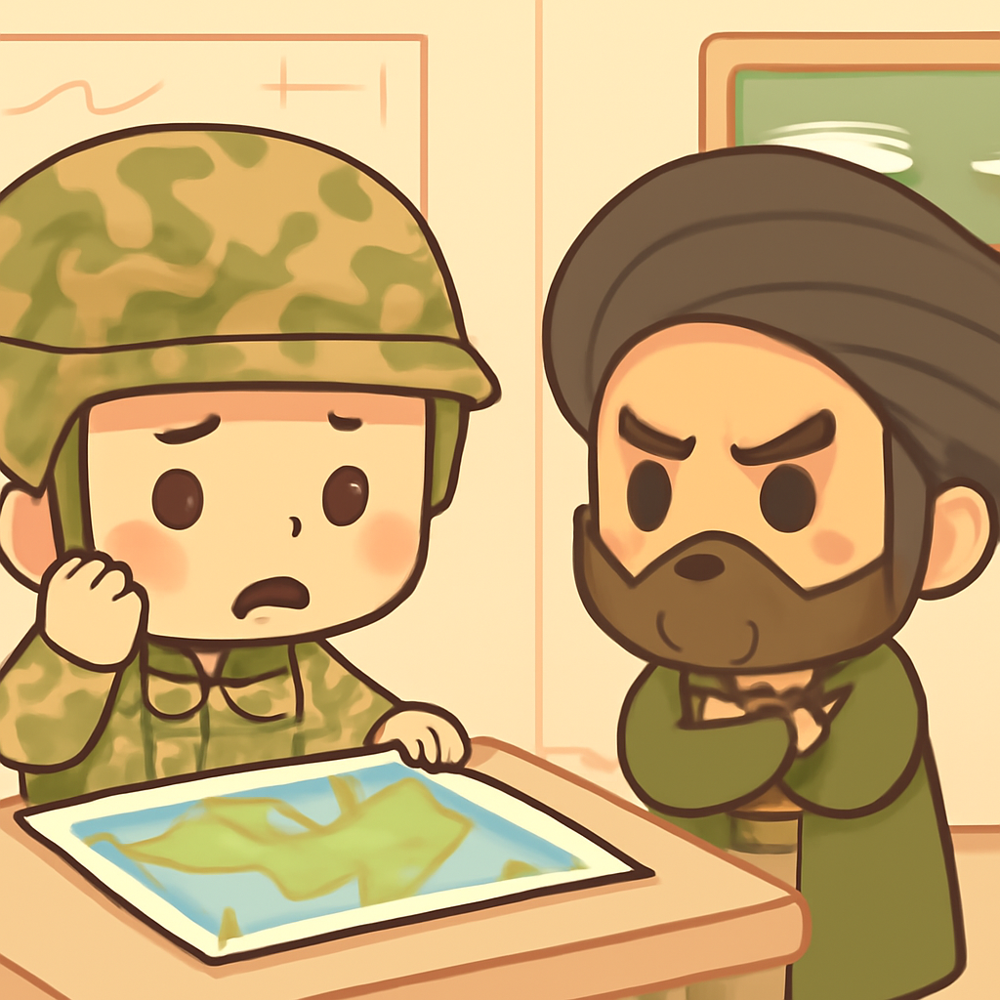
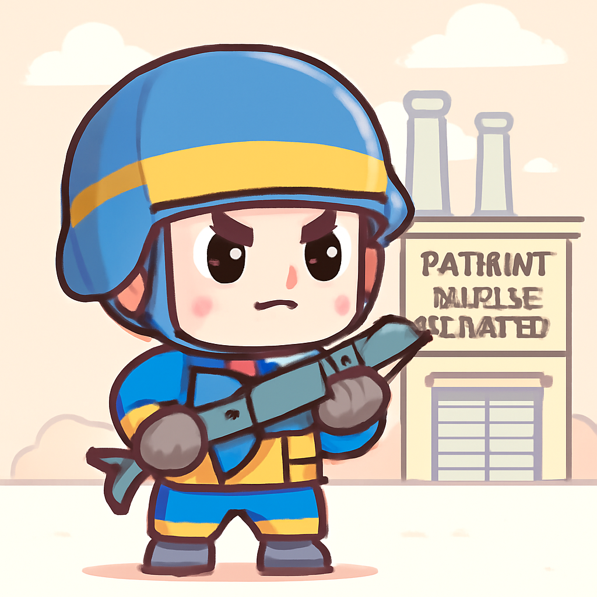
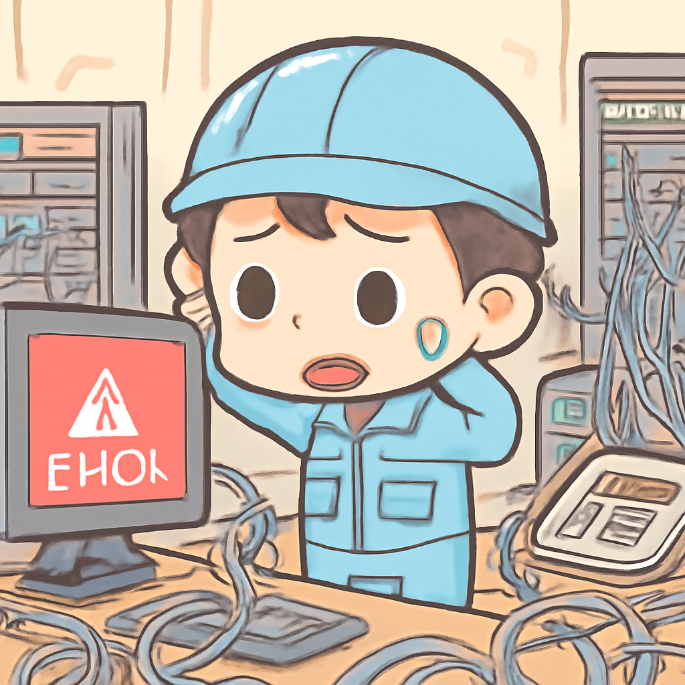

其一 · 美國 · 聯準會再次對伊朗發動空襲
美國針對伊朗的空襲回應油輪事件。

美國最近在伊朗南部進行了一系列空襲，這是對於伊朗在霍爾木茲海攻擊油輪事件的回應。這次行動引發了伊朗的強烈反擊威脅，加劇了中東的緊張局勢。這些攻擊不僅影響了兩國關係，也可能影響全球油價。看來，這場鬧劇還遠未結束。
🔗 原始新聞 ↗
2026-07-09 · 以古觀今，以笑抗愁
美國針對伊朗的空襲回應油輪事件。

美國最近在伊朗南部進行了一系列空襲，這是對於伊朗在霍爾木茲海攻擊油輪事件的回應。這次行動引發了伊朗的強烈反擊威脅，加劇了中東的緊張局勢。這些攻擊不僅影響了兩國關係，也可能影響全球油價。看來，這場鬧劇還遠未結束。
🔗 原始新聞 ↗
烏克蘭將獲得愛國者導彈生產許可。

據報導，烏克蘭將獲得生產美國愛國者導彈的許可，這無疑是對抗俄羅斯導彈威脅的重要一步。不過，生產時間可不短，烏克蘭可要耐心等待了。這項進展不僅提升了烏克蘭的防禦能力，也顯示出西方對其支持的持續性。希望未來能見到這些導彈的身影，而不是它們的影響。
🔗 原始新聞 ↗
德國一名醫生因殺人罪被判終身監禁。
在德國，一名緩和醫療的醫生因殺害15名病人而被判終身監禁。這起案件震驚了社會，因為醫生本應是病人的守護者，卻成了罪犯。此事件引發了對醫療倫理的重大討論，讓大家都在思考：醫生該如何平衡拯救生命與結束痛苦之間的界線？
🔗 原始新聞 ↗
孟加拉一所女子學校遭山崩，造成八人遇難。
孟加拉南部的山區近日因大雨引發山崩，八名學生在女子學校遇難，這讓人心痛不已。救援工作正在進行中，但面對惡劣天氣，困難重重。這場悲劇提醒我們，天災無情，人間有愛，希望能有更多人關心這些受災者的生活。
🔗 原始新聞 ↗
澳洲最大電信公司發生故障，影響廣泛。

澳洲最大的電信公司近期發生重大故障，導致火車運行和緊急電話服務受到影響。故障的原因仍然不明，但這讓不少人感到焦慮，尤其是那些依賴通訊服務的人。希望他們能早日修復系統，不要讓人們的生活陷入黑暗時代。
🔗 原始新聞 ↗